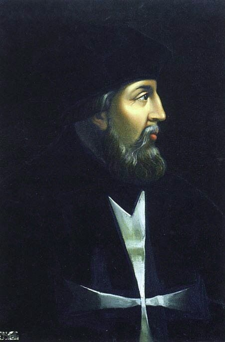
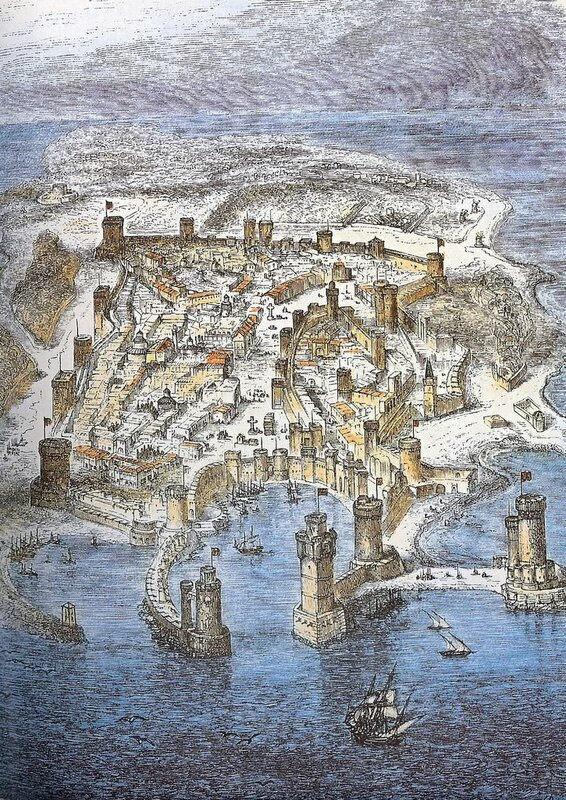
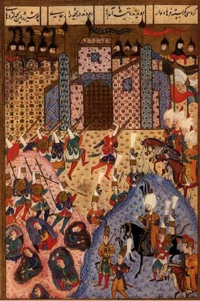

Осада Родоса, которая завершилась 488 лет назад, новогодней ночью с 1522 на 1523 год, является одним из самых знаменательных событий всемирной военной истории. Но описания ее полны противоречивых утверждений и оценок. Поэтому, в отличие от уже написанных заметок по истории ордена госпитальеров, этот период постараемся осветить более подробно, шире привлекая документальную информацию. Это, конечно, потребует больше времени и усилий, может быть, станет суше и формальней. Поэтому предварим этому подробному описанию краткий очерк осады, не вдаваясь пока в детали.
В 1521 г. султан Сулейман I захватил Белград. Письмо о прославлении очередной своей победы – фетхнаме — он направил и Великому магистру ордена иоаннитов Филиппу Вилье де л'Иль Адаму.

(Портрет кисти Henri Lehmann)
Это послание было не простым жестом вежливости, а являлось фактически объявлением войны рыцарям-госпитальерам.
Потомственный французский дворянин, занимавший должность Великого приора ланга Франции, де л’Иль Адам получил пост Великого магистра ордена в острой борьбе с потругальцем Андре до Амаралом. Мы выше уже упоминали об их совместной морской операции 1510 года. Уже тогда между двумя адмиралами пробежала черная кошка. Амарал считал, что следует использовать другую тактику боя, однако переубедить де л’Иль Адама ему не удалось. Победу на выборах Великого магистра своего соперника, которого в тот период даже не было на Родосе, Амарал воспринял как личное унижение и затаил обиду. На что способен обиженный адмирал мы увидим немного позже.

Сулейман, один из самых прославленных правителей Османской империи, который взошел на трон всего лишь за несколько месяцев до избрания де л’Иль Адама магистром ордена госпитальеров, выбрал наивыгоднейший момент для нападения.
(На полотне художника А. Хикеля (1878) Сулейман изображен со своей супругой Роксоланой, история которой у нас известна, пожалуй, больше чем история самого султана Сулеймана I Великолепного.)
Испания и Франция боролись друг с другом за владычество в Италии, а папа был озабочен расколом в католической церкви, набиравшим силу после призыва (1517 г.) Мартина Лютера к «христианской свободе» и реформации церкви. Венецию туркам удалось нейтрализовать, заключив с ней договор, предоставивший Светлейшей торговые привилегии. Помощи рыцарям ждать было неоткуда. Сулейман решил раз и навсегда вытащить иоаннитскую занозу из тела империи. Он не намерен был повторять ошибку Мехмета и планировал продолжать осаду до полного завоевания крепости.
Весной 1522 г. султан начал снаряжение огромной флотилии, и 24 июня турецкая армада из 400 с лишним кораблей (цифру эту мы прокомментируем в дальнейшем) подошла к Родосу. Часть из них бросила якорь у берегов острова, остальные, высадив солдат, направились за подкреплением в Анатолию.
К середине июля, у стен крепости собралось огромное войско, насчитывавшее 200 тыс. человек. Как и сорок лет назад, ядро османской армии составлял десятитысячный корпус янычар. Но в отличие от осады 1480 г., Сулейман, который лично возглавил операцию, основной упор сделал не на атаку с моря, а на приступ с сухопутных направлений. Султан взял с собой несколько тысяч саперов (по некоторым данным, число их оценивалось в 100 тысяч), которые должны были заложить под стены крепости мощные мины.
Многие изображения событий осады содержат, подобно приведенной миниатюре, работу саперов по закладке мин под стены крепости.
Флот Ордена в этот момент находился в состоянии перевооружения и был ослаблен. Чтобы не распылять силы, л’Иль Адам снял своих рыцарей с кораблей и укрепил гарнизон острова. Огромной турецкой армии противостояло 600 рыцарей и около 7000 солдат. После полугода осады, истощенные, но не сломленные госпитальеры, которые потеряли 240 рыцарей и большую часть солдат, были вынуждены капитулировать. Сулейман, восхищенный отвагой рыцарей, не только разрешил оставшимися в живых защитникам крепости беспрепятственно покинуть Родос, но и оказал им почести, когда они уходили с острова на свои галеры.
Орден был побежден, но честь свою и святыни сохранил